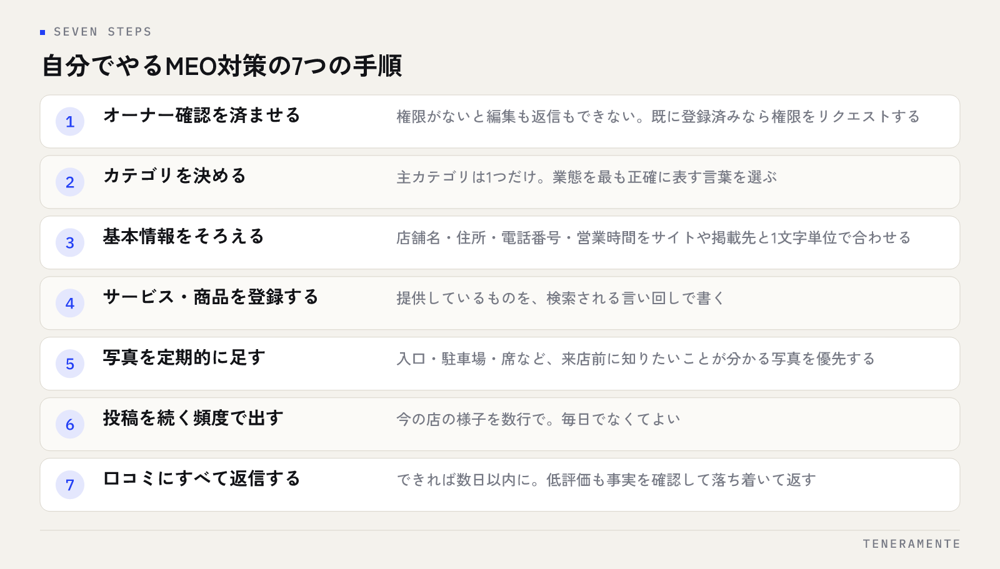

MEO対策を自分でやる方法を探している方に、先に結論をお伝えします。MEO対策の大半は、費用をかけずに自分でできます。難しいのは作業そのものではなく、片付いた状態を保ち続けることです。この記事では、今日から回せる7つの手順と、自分でやるときにつまずきやすい場所を順に整理します。
📌 この記事の結論
MEO対策で成果を分けるのは、特別な施策ではなく基本情報の正確さと更新の継続です。まずは自分で7つの手順を90日回し、時間が続かない部分だけを外に出すのが、いちばん費用対効果の高い順番です。
01MEO対策は自分でできる。分かれ目は「続けられるか」
MEO対策（Map Engine Optimization）は、Googleマップやローカル検索での見え方を整える取り組みです。中心にあるのはGoogleビジネスプロフィールで、登録も編集も無料です。専門のツールや広告費がなくても、店舗や事務所の担当者がその日から着手できます。
それでも差がつくのは、作業が単純だからこそです。営業時間の変更、写真の追加、口コミへの返信。どれも1回5分で終わりますが、忙しい時期に止まり、そのまま半年放置される。MEO対策で最も多い失敗は、間違った施策ではなく更新が止まることです。
ですから最初に決めるのは、施策の中身ではなく担当と頻度です。誰が、週に何分使うのか。この2つを決めずに始めると、初期設定だけ立派で中身が古いプロフィールが残ります。
02自分でやるMEO対策の7つの手順
全体像は次の7つです。この順番自体に意味があります。

先に用意するもの
店舗の正式名称、住所、電話番号、営業時間、定休日、駐車場の有無、提供サービスの一覧。ウェブサイトやチラシと表記がそろっているかを、始める前に確かめておきます。
写真や投稿から始める方が多いのですが、先に権限と基本情報を片付けないと、更新した内容が誤った情報の上に積み上がります。1つずつ、上から進めてください。
03最初にやること：オーナー確認と基本情報の精度
はじめに**オーナー確認（オーナー権限の取得）**を済ませます。これがないと編集も返信もできません。すでに誰かが登録している場合や、以前の担当者しか権限を持っていない場合は、権限のリクエストから進めます。
次が基本情報です。ここが最も効きます。特に重要なのは次の4つです。
- カテゴリ：主カテゴリは1つだけ選びます。業態をいちばん正確に表す言葉を選び、迷ったら実際に来る客層で決めます。副カテゴリは実際に提供しているものに限ります
- 店舗名：看板と登記の表記に合わせます。名称にキーワードを足す書き方は規約違反にあたり、修正や停止の対象になります
- 住所・電話番号・営業時間：ウェブサイト、SNS、各種掲載サイトと1文字単位でそろえます
- サービス・商品：提供しているものを言葉で登録します。検索される言い回しで書くのが基本です
祝日や年末年始の特別営業時間は、その都度入れてください。ここがずれていると、来店した人の体験が直接損なわれます。
04続ける仕組み：写真・投稿・口コミの回し方
基本情報が整ったら、更新を回す段階に入ります。頻度は「毎日」でなくて構いません。続く頻度に落とすほうが結果的に積み上がります。
写真は、外観・内観・スタッフ・商品やサービスの様子を、明るい時間に撮ったものを定期的に足します。同じ角度の写真を大量に上げるより、来店前に知りたい情報（入口、駐車場、席、待合）が分かる写真が効きます。
投稿は、キャンペーンよりも「今のお店の様子」が続けやすいテーマです。新しいメニュー、季節の対応、休業のお知らせ。1回あたり数行で十分です。
口コミは、集める工夫と返信の2つに分かれます。返信はすべてに、できれば数日以内に。低評価にも事実を確認したうえで落ち着いて返します。集め方の具体策はGoogleの口コミを増やす方法にまとめています。
05自分でやるときによくある失敗
自社運用でつまずく場所は、だいたい決まっています。
- 店舗名にキーワードを入れる：一時的に見え方が変わっても、規約違反であり修正対象です。やらないでください
- カテゴリを増やしすぎる：関係のない副カテゴリは、かえって狙いをぼかします
- 写真だけを追加して基本情報を放置する：見た目は更新されていても、営業時間が古いままでは逆効果です
- 口コミの返信が途中で止まる：返信のある店とない店では、読む側の印象がはっきり分かれます
- 効果を毎日確認して一喜一憂する：順位は検索する人の位置で変わります。日単位で追う意味はありません
更新が止まったプロフィールは、閉店したように見えます。これがMEOで最も大きな取りこぼしです。
06効果はどこで確かめるか
自分でやる場合こそ、確認する指標を絞ります。管理画面で見られる範囲で十分です。
- 表示された検索語：どんな言葉で見つかっているか。想定と違うなら、サービスの登録語を見直します
- ルート検索・電話・ウェブサイトの操作数：来店につながる行動の量です。順位より実務に直結します
- 口コミの件数と平均評価：件数の伸び方が、集め方の効き目を表します
- 写真の閲覧：どの写真が見られているかで、次に撮るものが決まります
見る頻度は月1回で構いません。同じ日に同じ項目を見て、前月と比べる。この形にしておくと、施策を変えたときの効果が判断できます。毎月の点検項目はGoogleビジネスプロフィールの月次チェックリストにまとめています。
07自分でやる範囲と、任せたほうがよい範囲
全部を自分でやる必要も、全部を任せる必要もありません。線引きの目安は次のとおりです。
| 内容 | 自分でやる | 任せたほうがよい場合 |
|---|---|---|
| 基本情報の整備 | ◎ 現場が正確に書ける | 店舗数が多く表記統一が難しいとき |
| 写真・投稿の更新 | ◎ 現場でしか撮れない | 更新が3か月以上止まっているとき |
| 口コミの返信 | ◎ 事情を知る人が書ける | 返信が滞留し、対応方針が必要なとき |
| 掲載情報の整合（他サイト） | △ 手間がかかる | 掲載先が多く、住所表記がばらばらなとき |
| 表示されない・停止した場合の復旧 | △ 判断が難しい | 停止や重複が起きたとき |
| ウェブサイト側の対応 | △ 技術が必要 | 構造化データや店舗ページの整備が必要なとき |
自分でやるべきなのは、現場にしか分からない情報を扱う部分です。逆に、複数サイトの表記統一や、停止・重複といった例外対応は、経験の差が出ます。ここだけを外に出すのは、費用の使い方として無理がありません。
08よくある質問
MEO対策を自分でやる場合、費用はかかりますか？
どれくらいで変化が出ますか？
複数店舗でも自分で管理できますか？
09まとめ：まず90日、同じ手順を回してみる
MEO対策を自分でやるうえで大切なのは、施策の多さではありません。オーナー確認を済ませ、基本情報を正確にし、更新と返信を止めない。この3つが揃っていれば、費用をかけずに土台はつくれます。まずは90日、同じ手順を同じ頻度で回してみてください。続かなかった部分が、そのまま次に任せるべき範囲になります。
TENERAMENTEは、自社運用で回らなくなった部分だけを引き受ける形も含めて、MEO対策をご一緒しています。まず自分でやってみたうえで判断したい、という段階でも構いませんので、ご相談ください。